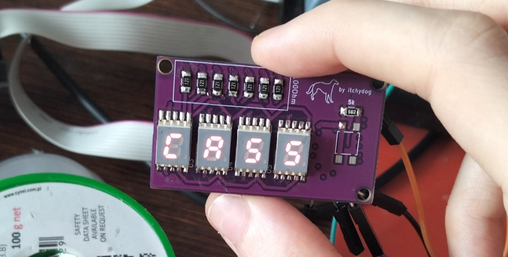
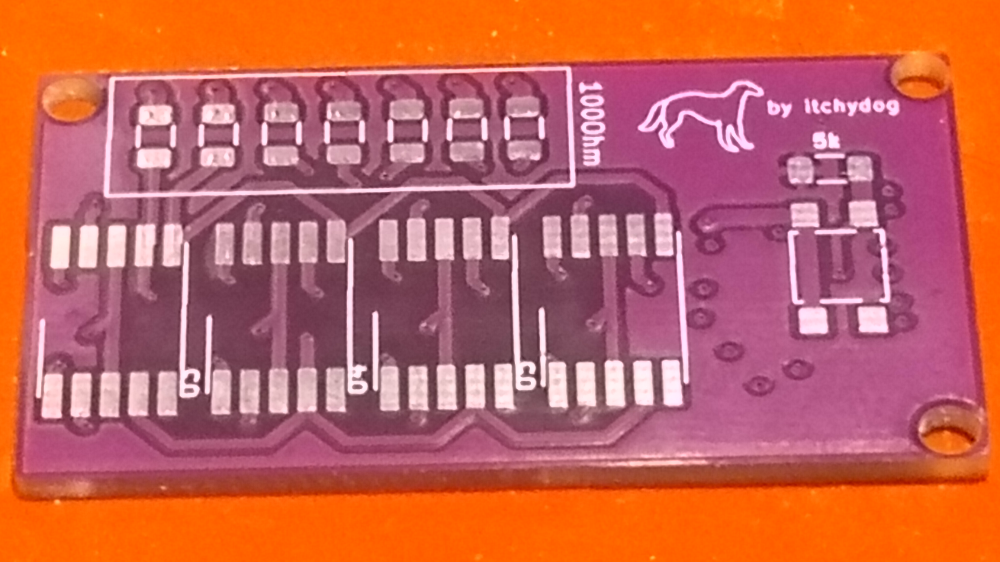
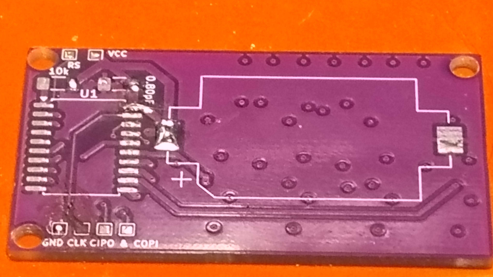

Itchydog's Borzoi Enclosure

Collar Display Project
2025-04-21
Hi! I have finally finished* a project that's been on my mind since I started learning electronics - a Collar Display!
I wear my collar everywhere, and I have a beautiful, bone shaped tag with "Cassiopeia" engraved on it, it's really nice and I love it! But one of the first projects that appeared in my (very limited) mind was a collar tag made out of seven segment displays!
To be completeeeely honest this project started with an OLED display in mind, but I came to a conclusion that that wasn't the best of ideas halfway through, so there's that!
In this post I just want to yap about how I made it work and what I used to make it work!
AVR!! AVR!!! AVR EVERYWHERE
I love AVR Microcontrollers, I am known to some as the AVR Witch since I can do almost anything using them. ATTiny85 was my first MCU ever, and I fell in love with that little guy. This project was supposed to run on ATTiny85 with a shift register to send data to seven segment displays. The issue was that I needed the board to be relatively small, to host most of its electronics on the back side while keeping seven segment displays in the front.
The issue here was that I wasn't able to design a small board that also featured a shift register (due to the HUGE CR2032 battery holder). I decided to simply send data in parallel, so I needed enough pins to turn on/off displays and also provide signals to them to display characters.
That was the point where I thought it would be a good idea to try out a different microcontroller, I heard lots about CH32V003 so I ordered a dev board and a few QFN and TSSOP20 packaged microcontrollers. I managed to program the microcontroller using their STM32 CubeIDE wannabe software (and HAL) and got the whole project working on a breadboard!
I actually liked CH32V003 a LOT. It's an excellent microcontroller for its price! I immediately sat down to design a board that would use the TSSOP20 version of CH32V003. I finished the design and sent it off to JLCPCB to produce it.
When the boards arrived I realised that the footprint for my MCU was incorrect. It turns out that KiCad (at least used to) assigned SOP20 to a microcontroller that was clearly labeled as being in a TSSOP20 package. Not only the package was wrong, but the pinout was also all over the place. I realized that I can't really trust KiCad on it, and I didn't want to bother with installing external symbol/footprint libraries for CH32V003.
I decided that the best thing I can do is to reach for something I know well and can trust KiCad with having correct footprints for. I also had to keep in mind that I would need a lot of pins (7 for driving LEDs and 4 for turning LEDs off/on) and I landed on ATTiny2313a.
How does it work?
Seven segment displays I used are common-cathode SMD mount seven segment displays. Keeping their CC line high basically disables the display, while pulling it low will enable it. We also have seven pins of our MCU used to actually provide our displays with data (for example, a character "C").
So the idea is (aside from doing it really fucking fast):
- Pull all displays HIGH (turn off all displays)
- Pull the desired display LOW
- Put our LED data on the data pins
- After that's done, go back to 1.
And that's basically it, it can be achieved on a AVR MCU very easily:
// PORTB pins are connected to our displays' common cathodes
// PORTD is our data, or in simpler terms, a character we want to display
// "character" function is a function that returns a uint8_t based off of what alphanumeric character we gave it, imagine it's a huge switch case
PORTB = 255;
PORTD = character('c');
PORTB &= ~(1 << PB0);
PORTB = 255;
PORTD = character('a');
PORTB &= ~(1 << PB1);
PORTB = 255;
PORTD = character('s');
PORTB &= ~(1 << PB2);
PORTB = 255;
PORTD = character('s');
PORTB &= ~(1 << PB3);
PORTB = 255;
I designed a very simple board around ATTiny2313, a few resistors (to limit the current flowing to displays), a decoupling capacitor and a pull-up resistor for the reset line. I also added a button that upon pressing, would iterate over different things to display! Here are some pictures of the board without components (yes, I did tear one of the programming pins out by accident, yes, i am stupid)
 Also, an image of it mounted on my collar!
Since the prototype worked, I decided I want to decrease the size of the board even further! Right now I'm working on an even more compact design that will include QFN ATTiny2313a!

I'm not going to lie, I am a little bit tempted to try CH32V003 again, just for the lolz, mostly because I want to branch out into other microcontrollers. If I decide to go with WCH, I'll quadruple check that everything is okay, I'll surely post an update once I have anything to show! See ya <3